Bike Sharing Analysis
Problem Statement
A bike-sharing system is a service in which bikes are made available for shared use to individuals on a short term basis for a price or free. Many bike share systems allow people to borrow a bike from a "dock" which is usually computer-controlled wherein the user enters the payment information, and the system unlocks it. This bike can then be returned to another dock belonging to the same system.
A US bike-sharing provider BoomBikes has recently suffered considerable dips in their revenues due to the ongoing Corona pandemic. The company is finding it very difficult to sustain in the current market scenario. So, it has decided to come up with a mindful business plan to be able to accelerate its revenue as soon as the ongoing lockdown comes to an end, and the economy restores to a healthy state.
In such an attempt, BoomBikes aspires to understand the demand for shared bikes among the people after this ongoing quarantine situation ends across the nation due to Covid-19. They have planned this to prepare themselves to cater to the people's needs once the situation gets better all around and stand out from other service providers and make huge profits.
They have contracted a consulting company to understand the factors on which the demand for these shared bikes depends. Specifically, they want to understand the factors affecting the demand for these shared bikes in the American market. The company wants to know:
Which variables are significant in predicting the demand for shared bikes. How well those variables describe the bike demands Based on various meteorological surveys and people's styles, the service provider firm has gathered a large dataset on daily bike demands across the American market based on some factors.
Business Goal:
You are required to model the demand for shared bikes with the available independent variables. It will be used by the management to understand how exactly the demands vary with different features. They can accordingly manipulate the business strategy to meet the demand levels and meet the customer's expectations. Further, the model will be a good way for management to understand the demand dynamics of a new market.
Data Preparation
Step 1: Reading and Understanding the Data
Pandas.DataFrame.nunique() function return Series with number of distinct observations over requested axis. The output below shows a numerical data set which comprises 4 seasons, 2 years, 12 months, holiday or not a holiday, 7 days in a week, working day or not, 3 types of weather, and 31 days. We will convert them into categorical variables. The rest of the columns stay as numerical data set.
instant 730
season 4
yr 2
mnth 12
holiday 2
weekday 7
workingday 2
weathersit 3
temp 498
atemp 689
hum 594
windspeed 649
casual 605
registered 678
cnt 695
day 31
dtype: int64
Let's get a concise summary print out of the dataframe. It shows index, dtypes, column types, non-null values, and memory usage. Out of the box, we have numerical data types. This is not the case as stated above. So, let's convert appropriate variables to categorical data type.

Here's the code to convert data type.
category_cols=['season','mnth','yr','holiday','weekday','workingday','weathersit','day']
for col in category_cols:
bike_df[col]=bike_df[col].astype('category')
- There are 730 rows and 16 columns in this data set.
- There is 8 categorical data and 4 numerical data after we dropped 'registered', 'casual', 'instant', and 'atemp'. This because after analyzing the heatmap and correlation chart, we determined that those variables don't add any value to the model due.
- There is 0 missing data and 0 duplicate values
- The Target variable is 'cnt'
Step 2: Visualizing the Data
Use boxplot to find correlation between the Target variable 'cnt' and the categorical variables. Iterate through each of the categorical variable and plot it against 'cnt'. Box plots are used to show distributions of numeric data values. They are useful when comparing values between groups of data, especially when they are skewed. These two books are for people who want to improve their social skills and confidence. It is easy to see where the main bulk of the data is and compare different groups.
# set the figure sizes, spaces, and fontsize
plt.figure(figsize=(20, 12))
plt.subplots_adjust(hspace=0.2)
plt.suptitle("Compare categorical variables with TARGET(cnt)", fontsize=18, y=0.95)
# set number of columns (use 3 to demonstrate the change)
ncols = 3
# calculate number of rows
nrows = len(category_cols) // ncols + (len(category_cols) % ncols > 0)
for n, m in enumerate(bike_df[category_cols]):
# add a new subplot iteratively using nrows and cols
ax = plt.subplot(nrows, ncols, n + 1)
# filter df and plot ticker on the new subplot axis
sns.boxplot(x=bike_df[category_cols[n]], y=bike_df[TARGET], ax=ax)
ax.set_xlabel(category_cols[n])

Analysis based on boxplot:
- Season: Falls has the highest bike rental counts. Spring has the lowest bike rental count.
- Month: More bike rentals occur between May and September
- Year: 2019 bike rental is higher than 2018 suggesting the trend it up.
- Holiday: non-holiday (0) has a wider range compared to holiday
- Weekday: Wednesday and Thursday appear to have more bike rental
- Workingday: inconclusive
- Weathersit: Bike rental is high when it is Clear, Few clouds, Partly cloudy, Partly cloudy
- Day: It seems that bike rental occur more in the middle of the month
Another visualization aides is heatmap. A heat map is an easy way to see where correlation is and to identify hot spots. The primary purpose of heat maps is to more effectively visualize the volume of activities/events within a dataset and direct viewers to areas on data visualizations that are important.
# set chart size, color and turn annotation on (numbers inside the chart)
plt.figure(figsize=(8,4))
sns.heatmap(bike_df.corr(), annot=True, cmap="YlGnBu")
plt.show()
Stacked bar graphs show the percentage of people who have selected one or more options. A category chart is usually used to show how a large category is split into smaller parts and how these parts are related to the parent category. The one below depicts variable 'yr' against variable 'cnt'. At a glance, we see 2019 has a huge increase in bike rental compared to a prior year. Please refer to the Jupyter Notebook for the rest of the charts.
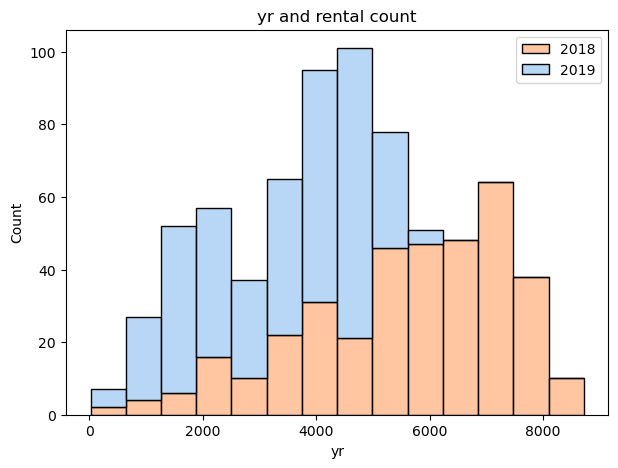
The next visualization shows simple linear regression. It provides a quick and computational inexpensive way to see our data. Both the left most and right most chart show the data set is linear in nature. The residual plot shows the distribution of the data. Finally, the pattern plot error terms. It helps determine if there is any clear pattern.
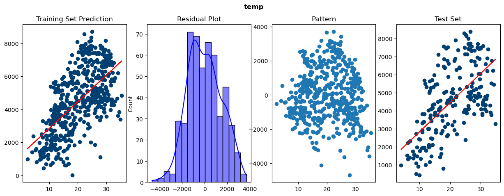 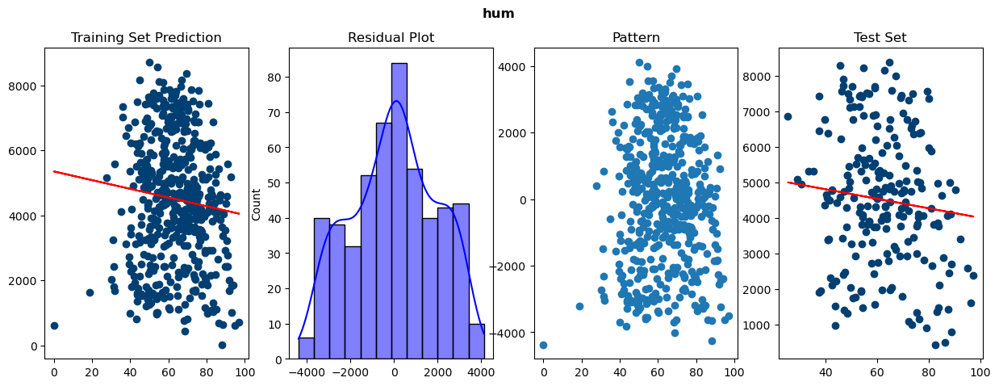 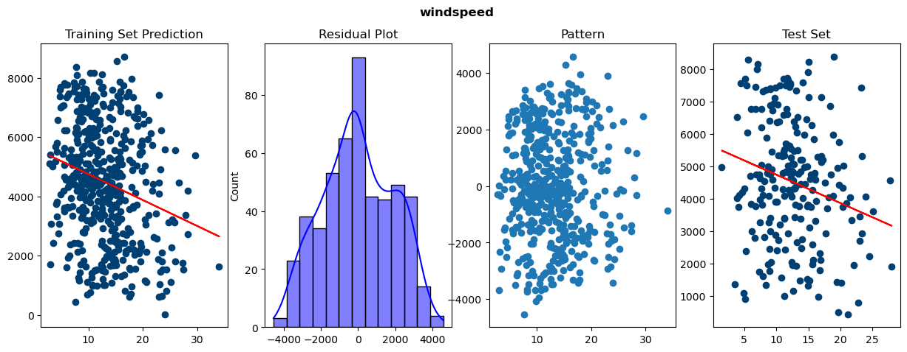
Note: 'hum' and 'windspeed' have downward linear regression lines. The don't seem to contribute to bike rental prediction much.
Step 3: Data Preparation
The get_dummies function is used to convert categorical variables into dummy or indicator variables. Dummy variables can be either 0 or 1 encoding. drop_first is important to use when using dummy variables, as it helps in reducing the extra column created during dummy variable creation. The remaining columns become linearly independent. As a result, it makes it easier to interpret the coefficients of the fitted model.
DUMMIES = ['weathersit']
DUMMY_COLS = pd.get_dummies(bike_df[DUMMIES], drop_first=True)
bike_df = pd.concat([bike_df, DUMMY_COLS], axis=1)
bike_df = bike_df.drop(DUMMIES, axis=1)
As part of data preparation is to scale the data. Scaling is changing the independent variable to make it easier to interpret by computer. It’s important for your algorithm to work fast and efficiently, which will help speed up the calculations. Data analysis is often performed using machine learning techniques. These techniques are used to find an underlying model that fits or explains the collected data and thus reduce its dimensionality. The unit of measurement of the inputs to the model is important, and not scaling. If you don’t scale your data, your algorithm will not perform well. If we want to fix this problem, we need to scale all the variables to the same level of magnitude. What is the difference between scaling and standardization? Scaling just changes the values of the parameters that the model fits, but standardizing just changes the values of the variables. There are different of scaling:
- Normalization/Min-Max Scaling
- Standardization Scaling
EXCLUDE = pd.concat([bike_df[YESNO], bike_df[DUMMY_COLS.columns]], axis=1).columns
SCALED = bike_df.loc[:,~bike_df.columns.isin(EXCLUDE)]
# Scale the numerical data between 0 and 1
scaler = MinMaxScaler()
# Fit on data
mlr_train[SCALED.columns] = scaler.fit_transform(mlr_train[SCALED.columns])
Perform Multi Linear Regression
This is a technique for evaluating the performance of a machine learning algorithm. The procedure involves taking a dataset and dividing it into two subsets. The first subset is used to fit the model and is referred to as the training dataset. The second subset is not used to train the model; instead, the input element of the dataset is provided to the model, then predictions are made and compared to the expected values. The test dataset will be used to evaluate the performance of the model on new data. We allocate 70% for training and 30% for testing in this example. Next, we drop the target variable 'cnt'.
from sklearn.model_selection import train_test_split
mlr_train, mlr_test = train_test_split(mlr_df, train_size=0.7, random_state=100)
Createa functions so it can be re-used as we will manually add one variable at a time This function takes two parameter input. x is the training set and m is the type of model we're training (i.e simple linear regression, multiple linear regression or Recursive Feature Elimination (RFE))
Variance Inflation Factors (VIF) measure how much the variance of the estimated regression coefficients are inflated as compared to when the predictor variables are not linearly related.
def train_model(x, m):
# These global variables enable us to reference them outside of the function
global lr_model, mlr_model, rfe_model
global X_train_lr
global X_train_mlr
global X_train_rfe
# Define Variance Inflation Factor (VIF)
vif = pd.DataFrame()
vif['Features'] = x.columns
vif['VIF'] = [variance_inflation_factor(x.values, i) for i in range(x.shape[1]) if (x.shape[1]>0)]
vif['VIF'] = round(vif['VIF'], 2)
rfe_vif = vif.sort_values(by = "VIF", ascending=False)
# Depending on user input, run one of the training jobs
if m == mlr:
X_train_mlr = sm.add_constant(x)
mlr_model = sm.OLS(y_train, X_train_mlr).fit()
return mlr_model.summary(), vif
elif m == rfe:
X_train_rfe = sm.add_constant(x)
rfe_model = sm.OLS(y_train, X_train_rfe).fit()
return rfe_model.summary(), vif
if m == lr:
X_train_lr = sm.add_constant(x)
lr_model = sm.OLS(y_train, X_train_lr).fit()
return mlr_model.summary(), vif
else:
print("Which model do you wish to train?")
For the first model, we add one variable at a time in according with our correlation study above. Lets ignore the TARGET variable and start training the model with next highest correlated variables. Then, start add more variables. R-squared is 89.9% with just one variable added. P-Value is zero. With two variables 'registered' and 'casual', R-squared was 1.00 with p-value of 0.00.
# build a model with one variables. Corr study shows that registered has the highest corr
X_train_sm = sm.add_constant(X_train['temp'])
train_model(X_train_sm, mlr)
Even after adding 'temp', 'mnth', and 'weekday', the R-squared only increased a tiny bit. The next step is to add all variables at once. Then, we remove one variable at time. After that, we evaluate the R-squared and p-value. The process of how-to do that is below.
After we added all variables, many of the p-values became significantly high. The VIF is also high. Let's remove one variable at a time starting with the highest value of both VIF and p-value.Between the VIF and p-value, 'instant' should be dropped first as it has the highest values.
# drop and train
X = X_train.drop('instant', axis=1)
# train_model(X, mlr)
train_model(X, mlr)
Notice, with all variables added, R-squared climbed to 80.3%. The p-values for 'mnth' and 'day' are higher then 0.005. The VIF value below the OLS Regression Result is below 5, which isn't too bad. The idea here is to select another variable with high value for both VIF and p-value as the next candidate to be dropped. We iterate through this process until the p-values are between 0.005 and 0.000. After dropping 'mnth', 'day, 'hum', and 'workingday', we finally got p-values to significant value below 0.005.
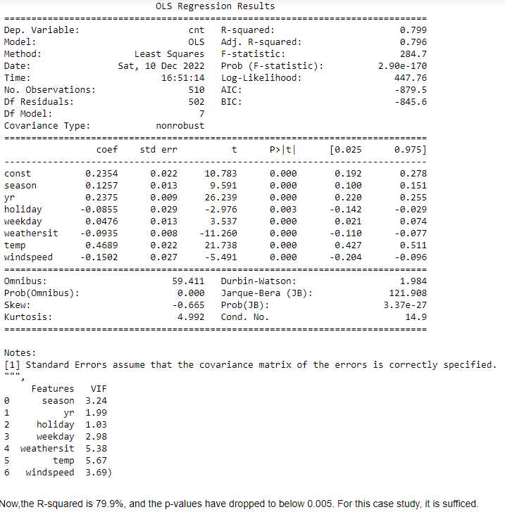
Residual Analysis of the MLR
In this step, we check to see if the error terms are normally distributed. We do this by plotting the histogram of the error terms and see what it looks like.
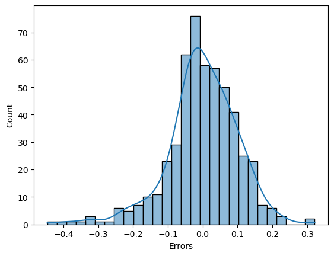
A residual is positive or negative, depending on whether the predicted value is higher or lower than the observed value. Negative residual means that the predicted value is too high. The chart above shows normal distribution.

Model evaluation is important. We plot the different between predicted and actual. This result shows a linear slope upward, which is a good sign.
We get an r2_score of 0.7799. R2 has no such thing as “the square of something.” It could be positive, negative or zero, depending on r2 is negative only when a chosen model does not follow the trend of the data. This model seems to be performing okay given the r2_score closer to 1.Perform Recursive Feature Elimination
RFE is a good feature selection algorithm because it is easy to use and configurable. It is especially effective at identifying the important features. You need to decide how many features you want to use. This is the most important hyperparameter that you need to set. In this case, we tell RFE to pick 10 features to work with.
# Importing RFE and LinearRegression
from sklearn.feature_selection import RFE
from sklearn.linear_model import LinearRegression
EXCLUDE = pd.concat([rfe_df[YESNO], rfe_df[DUMMY_COLS.columns]], axis=1).columns
SCALED = rfe_df.loc[:,~rfe_df.columns.isin(EXCLUDE)]
# Running RFE with the output number of the variable equal to 10
lm = LinearRegression()
lm.fit(X_train, y_train)
rfe = RFE(lm, n_features_to_select=10)
rfe = rfe.fit(X_train, y_train)
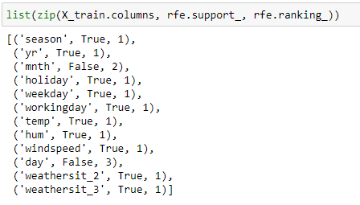
Let's train our RFE model using the suggested rfe.support_ columns.
# We're going to manual train the model to initialize the variables. Then, we'll use our prebuilt function above.
X_train_rfe = X_train[col]
X_train_rfe = sm.add_constant(X_train_rfe)
rfe_model = sm.OLS(y_train, X_train_rfe).fit()
X_train_new = X_train_rfe
rfe_model.summary()
Just like the above where we add all the variables, we train with all the rfe.support_ variables. From the OLS Result below, we need to drop variables with the highest p-value first. Just like before, we drop on at a time and iterate through the process until the p-value is below 0.005 or what ever is acceptable according to the domain subject-matter-expert. 'workingday' has the highest p-value. Let's drop it first. 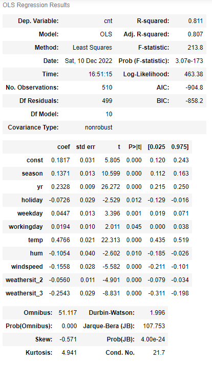
The OLS Regression Result looks fantastic. The R-squared is still 0.809. All the p-values are in acceptable level The VIF is below 5 as well. 'Const' has a high VIF. We drop it. That didn't changethe R-squared. We can still drop any variable with p-value above 0.005, but I'm satisfied as it is currently.
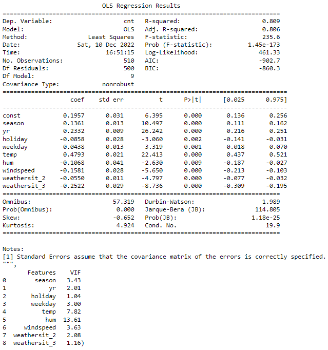
Residual Analysis of the RFE
Once again, Residual Analysis is normally distributed. However, the evaluation gives us an uptrend linear line, which is good. 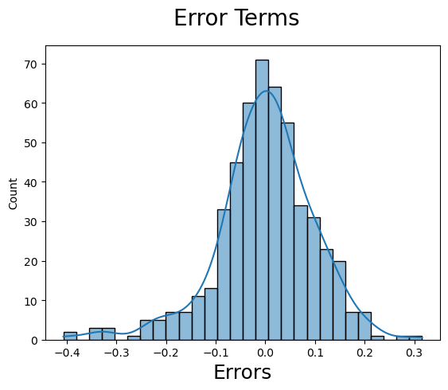
overfitting. 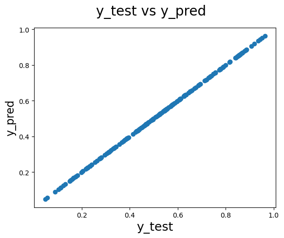
Finally, the r2_score is 78.9%. It is slightly better than the 77.9% that we got from manual training. The best part is that it was faster with minimal works required. So hybrid training is probably a good approach and highly recommended.
Conclusion
- Simple Linear Regression (SLR): temp displayed a linear red line upward. The residual analysis depicted via histogram is normally distributed. There is no identifiable pattern found.
- Multi Linear Regression (MLR): first add one variable, traing the model and reiterate. In this process, observe the R-squared and P-value. The second method is to add all variables. Then, remove the highest P-value one at a time. Utilize the corresponding high VIF value to identify the next highest variable to drop. Only drop one at a time. Manual model training is show the following variables contribute to higher bike rental: season, yr, holiday, weekday, weathersit, temp, and windspeed. With that we ended up with 77.8% R-square and 77.9% r2_score.
- Use Recursive Feature Elimination (RFE) to automate which features to include in training. After dropping unwanted variables, the R-squared is 80.9% and the r2_score is 78.9%. The following variables positively contribute to the model: 'season', 'yr','holiday','weekday','temp','hum','windspeed','weathersit_2' and 'weathersit_3'.
- Manual selection of variables for training is a tedious job. The automated feature selection is nice, but the computer is not a subject matter expert in your industry. Therefore, a hybrid approach is recommended. For each of the training method(SLR, MLR, and RFE), plot the error terms, and get r2_score. Also, plot y_test against y_test_pred on a scatter plot.